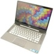

Happiness to me is excepting everything you have and that you have accomplished or failed at. In order to be happy you need to know that everything is never going to be perfect. So, you need to accept the imperfections because you can't change them. And if you can change them then do so. I believe having a balance in life is what is going to make you happy. You can't live your life working all of the time but at the same time you can't live life simply goofing off all of the time. I don't know what I'm talking about but basically being worry free.
 My predictions for technology in 2021 are that things that we think are big now such as ipod touches, iphones, and macbooks will be dirt cheap and anyone can have one. Places such as blockbuster will completley be wiped out at this point because redbox, on demand, and netflix will take over. It will be weird if a kid doesn't have a phone before they learn to ride a bike. And things I can't even make up in my mind right now will be things I will be using on a daily basis.
I can't stand reading. Hopefully when I'm old that'll change so I can sit and read like all the other old ladies, or maybe I'll take up knitting. There were very few books that I read the entire book. I would have to say that my favorite was To Kill a Mockingbird.
A significat movie... uhm, well The Hangover and Paranormal Activities are pretty big. Twilight's pretty big tooo.
 Top songs: I'm sexy and I know it... singers is easier, Adele, Lil Wayne, gucci, Chris Brown, Rihanna, Lady Gaga, Katy Perry, Taylor Swift, Beyonce, Eminem, Jay-Z, Miley Cyrus, Lmfao, and yeahhh.
Top songs: I'm sexy and I know it... singers is easier, Adele, Lil Wayne, gucci, Chris Brown, Rihanna, Lady Gaga, Katy Perry, Taylor Swift, Beyonce, Eminem, Jay-Z, Miley Cyrus, Lmfao, and yeahhh.